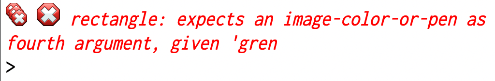
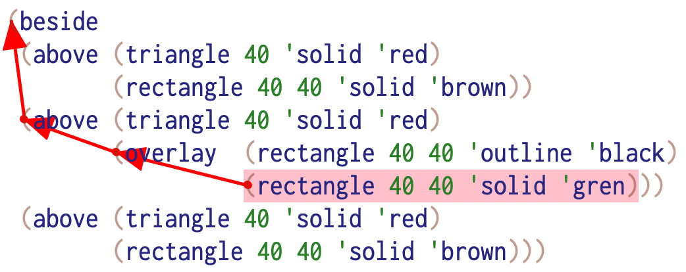

When things go wrong¶
The process of expressing our ideas as concrete programs we can manipulate helps us gain a deeper, more nuanced understanding of these ideas. This means that during the intermediate stages we may not have truly well formed ideas and the programs/definitions we’ve written may not correctly or completely capture our (evolving) thinking.
Article reference
Peter Naur’s Programming as theory building article argues for a view of programming itself, in general, as an activity whose purpose and effect is to build operational theories of the domains being modelled in the programs. The article is worth a read although it might seem too dated to be relevant.
So when we do find out that a term doesn’t mean what we thought it meant, how do we go about figuring out the gap in our understanding and plug the hole?
A common rookie mistake [1] is to try various changes at random until some particular change “seems to work”. This is not a desirable approach for the following reasons -
You might not actually solve the problem but might come to be in the illusion that you’ve solved it.
There is no guarantee that you’ll actually find out the main cause of the discrepancy … unless perhaps you have so much experience that due to sheer familiarity you gravitate towards the core issue at hand.
Even after addressing the gap, you’re unlikely to gain an improved understanding of what you set out to program originally. This is, by far, the most significant reason to not take this approach. [2]
Fortunately, we have a strong set of cognitive tools in the scientific method that can help us with this. Here is the general process of how such a situation must be acted on –
You evaluated some expression which produced a value you didn’t expect. This is your observation. You might bolster this observation by coming up with more nearby expressions of the same nature that also exhibit the discrepancy. But you should have at least one such observation at hand that you think needs to be addressed.
Knowing what you know about your existing definitions, formulate a hypothesis about the issue.
Identify a consequence of the hypothesis that can be tested. i.e. If your hypothesis were true, then you expect something else (ideally a non trivial consequence) to also be true. There are often many consequences you can come up with, but pick one for which you can make an easy test.
If the test fails, then the expected consequent is absent and therefore your hypothesis is wrong and needs to be revised. The revisions process might also entail making modifications to your program to tell you more about what your definitions are doing, so that you can make better hypotheses about the problem.
Lather, rinse and repeat the above in a cycle until you arrive at the resolution of the issue you started with.
Toyota’s five whys
There is a principle by Toyota’s founder that’s often shared in business circles that is useful to remember in this context as well. When you identify a problem, ask why. Once you find an answer, ask why again, and keep doing this five times. Fix the reason that you arrive at at the end.
There is nothing magic about “five” here, but the import is that the reason you initially land on might not be the true reason and you might need to dig deeper to find the real reason. This takes experience to do well, but you can get there with consistent and easy practice.
Three houses¶
Consider a variation of the same program we saw in Interrogating programs.
1#lang racket
2(require 2htdp/image)
3
4(beside
5 (above (triangle 40 'solid 'red)
6 (rectangle 40 40 'solid 'brown))
7 (above (triangle 40 'solid 'red)
8 (overlay (rectangle 40 40 'outline 'black)
9 (rectangle 40 40 'solid 'gren)))
10 (above (triangle 40 'solid 'red)
11 (rectangle 40 40 'solid 'brown)))
Run this program and see what you get. You should see the following error message –

The error message shown.¶

The code trace of the error.¶
The red arrows in the figure about start at the innermost expression that contains the error and works it way up to the outermost expression that contains it.
In this case, the error was a typo which becomes clear to us from the error
message itself. We can immediately see that we typed 'gren instead of
'green. Remember that not all typos are easy to spot and it is helpful that
the rectangle primitive will report these unknown values to you so you can
fix it. (We’ll see later how to do this ourselves.)
Our hypothesis now is that we mistyped 'green as 'gren. If this
hypothesis is correct, changing it to 'green should result in the error
vanishing. We can easily check that by making that change.
The validation here is not simply that the error disappears, but we should check that indeed we’re getting the desired house drawn. Not realizing this is again a characteristic rookie error.
Confirm your hypotheses beforehand¶
Well, the above error was easy to find and fix. Not all errors are like that though. Here is the same program again, but it has an error. See if you can spot it.
1#lang racket
2(require 2htdp/image)
3
4(beside
5 (above (triangle 40 'solid 'red)
6 (rectangle 40 40 'solid 'brown))
7 (above (triangle 40 'solid 'red)
8 (overlay (rectangle 40 40 'outline 'black)
9 (rectangle 40 40 'solid 'green)))
10 (above (triangle 40 'solid 'red)
11 (rectangle 40 40 'solid 'brown)))
When you run this program, you get no error messages. That doesn’t however mean
that the program is correct. In fact, this is the same program as in the
original page and it contains an error that arises from an assumption made
w.r.t. the behaviour of 'outline that was not tested before using in the
program.
You might think this looks perfectly fine to you (well, as far as Monopoly level
housing goes, at least). But the assumption was that the (overlay ...) term
places the outline within the solid green rectangle.
The best way to see this assumption at play is to exaggerate the discrepancy
and check that the assumption holds. We need the outline to be thick to see
clearly whether it is within the bounds of the green rectangle or outside it.
One way is to use pen to make a nice thick and blue stroke so it is visible.
Check this –
#lang racket
(require 2htdp/image)
(beside
(above (triangle 40 'solid 'red)
(rectangle 40 40 'solid 'brown))
(above (triangle 40 'solid 'red)
(overlay (rectangle 40 40 'outline (pen 'blue 10 'solid 'butt 'miter))
(rectangle 40 40 'solid 'green)))
(above (triangle 40 'solid 'red)
(rectangle 40 40 'solid 'brown)))
When you run this, you can clearly see that the “outline” is bleeding outside the solid green rectangle despite it having the same dimensions.
Here, we see the importance of recognizing an assumption (really a hypothesis about the meaning of a word) as and when we’re making it, and checking it with a test in which we can clearly see the assumption holding or failing before proceeding.
Exercise
Now that you know the problem and you also know what to expect, how would you fix the program?
Note that for this kind of an example where our senses are involved in gauging the result, there may be more than one valid solution.
Misunderstanding words¶
Consider the following category of error where there is a clear misunderstanding
of what the words overlay and above mean.
1#lang racket
2(require 2htdp/image)
3
4(beside
5 (overlay (triangle 40 'solid 'red)
6 (rectangle 40 40 'solid 'brown))
7 (overlay (triangle 40 'solid 'red)
8 (above (rectangle 40 40 'outline 'black)
9 (rectangle 40 40 'solid 'green)))
10 (overlay (triangle 40 'solid 'red)
11 (rectangle 40 40 'solid 'brown)))
In this case, the programmer has misconstrued that above means something
like “stacked one on top of another” and overlay means “one laid over and
above another”. Unfortunately the actual meanings are reversed and this is
easily found had the programmer read the manual to confirm their thinking
(i.e. “assumption”) instead of going ahead with it. While in this particular
case it is easy to spot by running the program and visually checking the result,
this kind of an assumption can be hard to spot when it occurs deep down in
some voluminous code.
The right approach here is to be mindful of our assumptions and check them, preferably by tests, before building on those assumptions.
The technique that comes to our rescue here is the process of narrowing down
to the smallest term that produces an instance of the misunderstanding. In
this case, this can be one of the overlay terms or better the above
term nested within an overlay. Checking what these terms individually mean
in the interaction window can clarify for us what is going on and help address
the misunderstanding.
Other kinds¶
We’ll get instances of other kinds of errors as we go along and grow our programming muscles. For now, be aware of assumptions you’re making and test them using the interaction window before using the terms in your program.